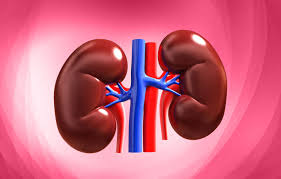

Kidney Cysts

About: Kidney cysts are fluid-filled sacs that can be simple (usually harmless) or complex (requiring closer evaluation).
Polycystic kidney disease (PKD) is a genetic condition where multiple cysts form over time, potentially leading to kidney dysfunction.
Symptoms & Diagnosis:
- Many cysts are asymptomatic and discovered incidentally via imaging.
- In symptomatic cases: flank pain, blood in urine, or enlarged kidneys.
- Ultrasound, CT, or MRI help characterize cysts and detect complications.
Treatment & Management:
- Simple cysts may not require treatment unless they cause symptoms.
- Draining larger cysts or surgery may be needed if pain or infection occurs.
- For PKD, blood pressure control and regular monitoring are essential.
Do's & Don'ts:
- DO stay hydrated to support overall kidney function.
- DO follow up with imaging if recommended to monitor cyst growth.
- DON’T ignore persistent pain or urinary abnormalities; seek medical advice.
Yoga/Exercise/Meditation Links:
References: National Kidney Foundation, PKD Foundation
Disclaimer: This content is for educational purposes only. Consult your healthcare provider for personalized advice.
Recommended Doctor: Dr. Nasreen Gite (Urologist)
Kidney Stone

About: Kidney stones occur when minerals like calcium oxalate or uric acid crystallize.
Risk factors include dehydration, high sodium intake, certain diets, and family history.
Symptoms can include severe flank pain, pain during urination, and pink or brown urine.
Prevention & Treatment:
- Increase fluid intake (especially water) to help prevent stone formation.
- Dietary adjustments: reducing high-oxalate foods (spinach, nuts) if recommended.
- Treatment can involve pain management, medications to dissolve stones, or shock wave lithotripsy/surgery for larger stones.
Do's & Don'ts:
- DO drink at least 2–3 liters of water per day unless otherwise advised.
- DO consult a doctor if you experience severe pain or repeated stone episodes.
- DON’T rely solely on home remedies for large or recurring stones.
Yoga/Exercise/Meditation Links:
References: American Urological Association, NIDDK
Disclaimer: This content is for educational purposes only. Consult your healthcare provider for personalized advice.
Recommended Doctor: Dr. Nasreen Gite (Urologist)
Kidney Tumor

About: Kidney tumors (e.g., renal cell carcinoma) can be asymptomatic in early stages.
Symptoms may include blood in urine (hematuria), flank pain, or an abdominal mass. Early detection often leads to better outcomes.
Diagnosis & Treatment:
- Imaging tests (CT, MRI) and lab work help confirm the presence and stage of tumors.
- Treatment can involve surgical removal (partial or radical nephrectomy), targeted therapies, immunotherapy, or radiation.
Do's & Don'ts:
- DO follow screening guidelines if you have risk factors (smoking, obesity, family history).
- DO maintain a healthy diet to support overall health during treatment.
- DON’T ignore symptoms like persistent flank pain or changes in urine color.
Yoga/Exercise/Meditation Links:
References: American Cancer Society, Kidney Cancer Association
Disclaimer: This content is for educational purposes only. Consult your healthcare provider for personalized advice.
Recommended Doctor: Dr. Nasreen Gite (Urologist)
Normal Kidney Scan

About: A normal scan indicates no obvious cysts, stones, or tumors.
However, routine check-ups can still be important if you have risk factors such as high blood pressure, diabetes, or a family history of kidney disease.
Kidney Health Tips:
- Stay hydrated with water rather than sugary drinks.
- Monitor blood pressure and manage chronic conditions (e.g., diabetes).
- Avoid excessive use of NSAIDs without medical supervision.
Yoga/Exercise/Meditation Links:
References: National Kidney Foundation, WHO Guidelines on Chronic Kidney Disease
Disclaimer: This content is for educational purposes only. Consult your healthcare provider for personalized advice.
Recommended Doctor: Dr. Nasreen Gite (Urologist)